Door Module: Diagrams
Component Connector End Views
Front Passenger Door Module (FPDM) X1
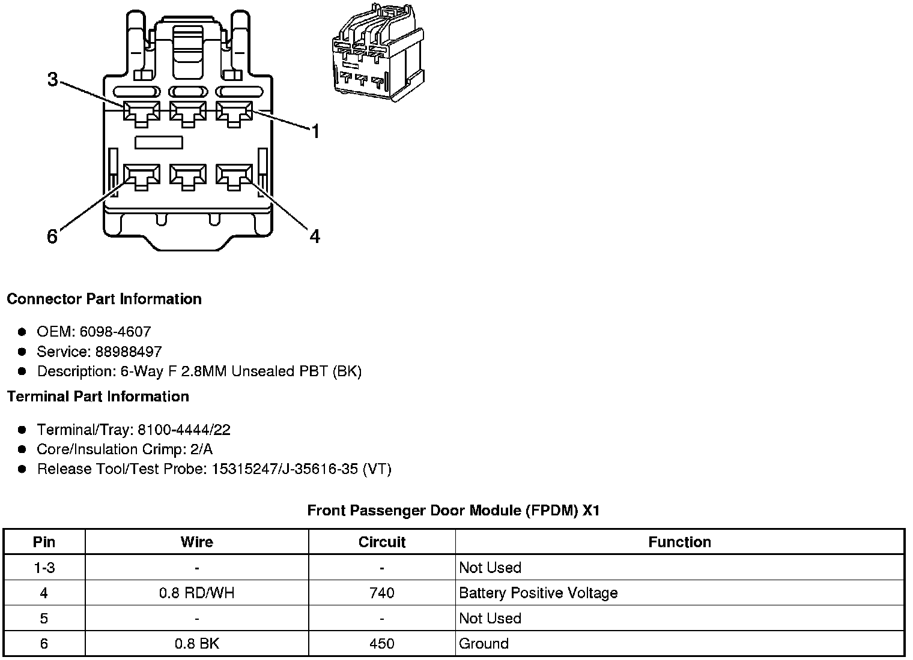
Front Passenger Door Module (FPDM) X2
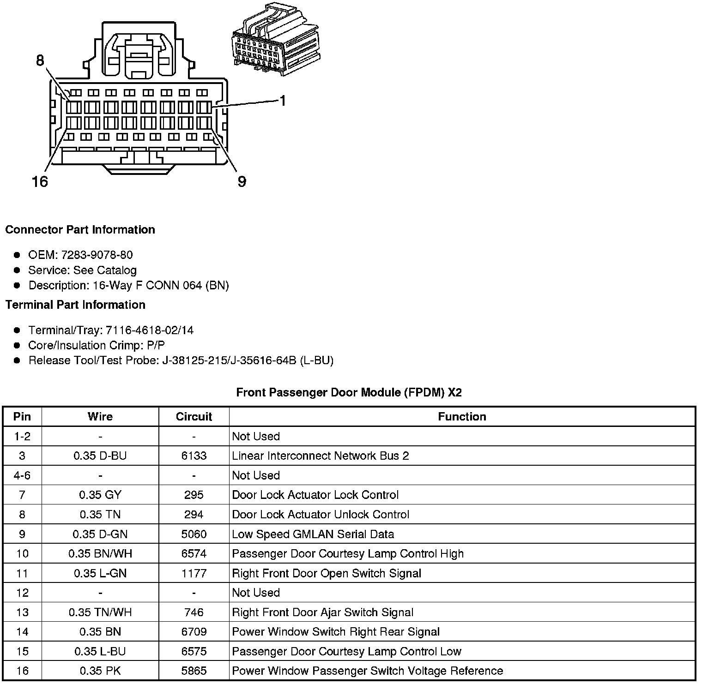
Front Passenger Door Module (FPDM) X3
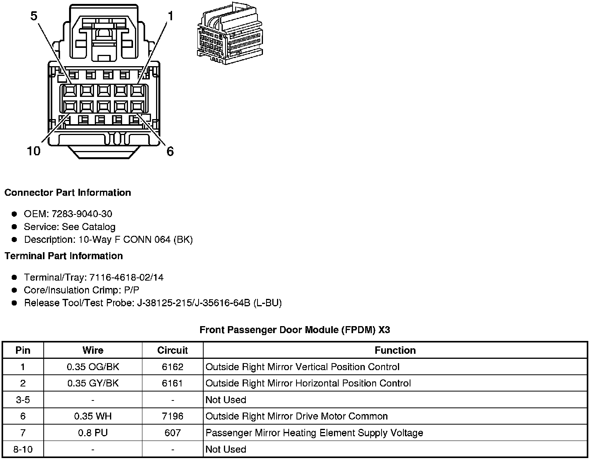
Front Passenger Door Module (FPDM) X4
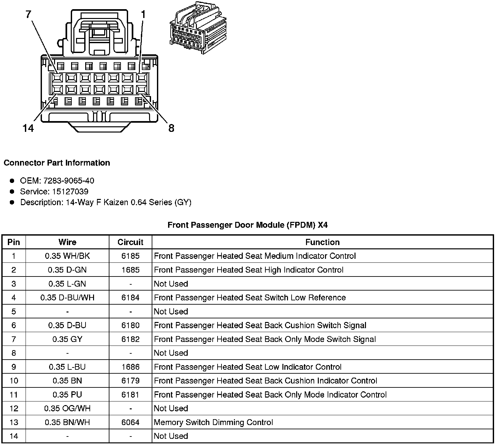
Front Passenger Door Module (FPDM) X6 (RHD)
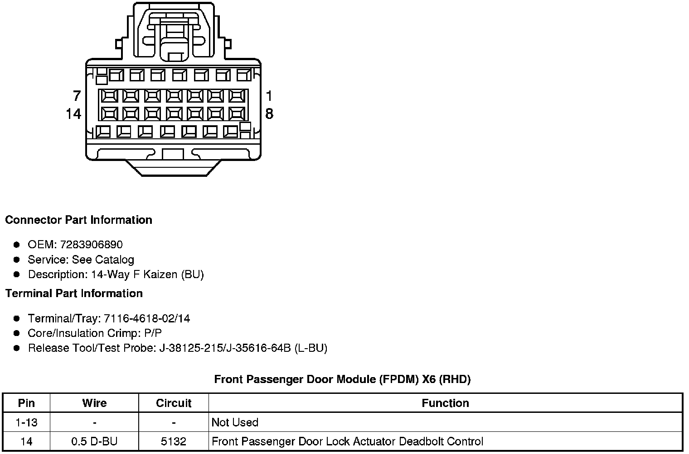
Front Passenger Door Module (FPDM) X7 (DR4)
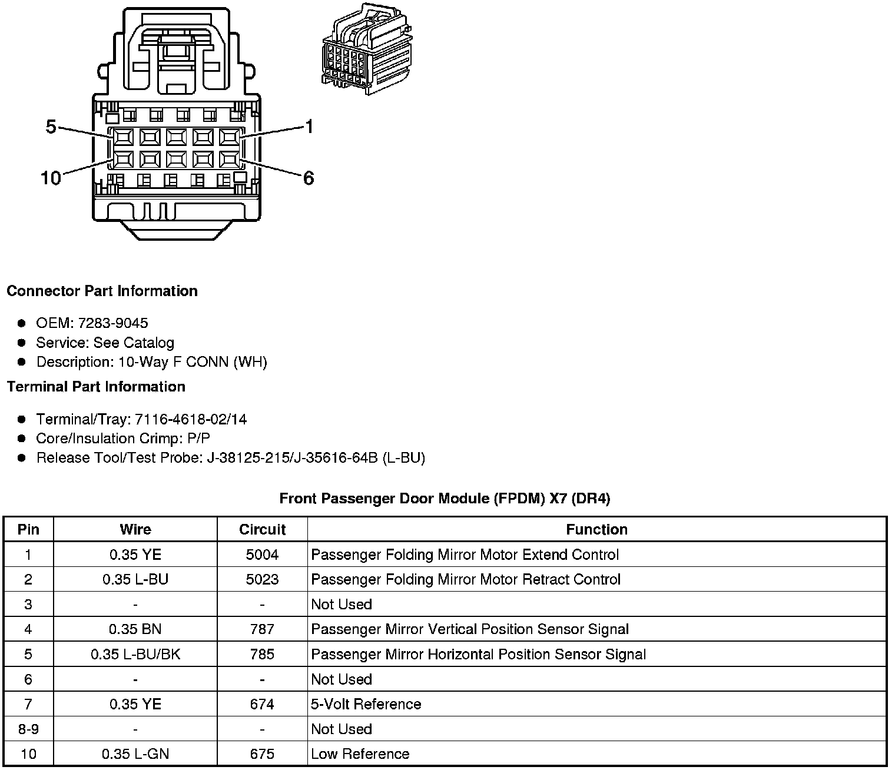
Component Connector End Views
Driver Door Module (DDM) X1
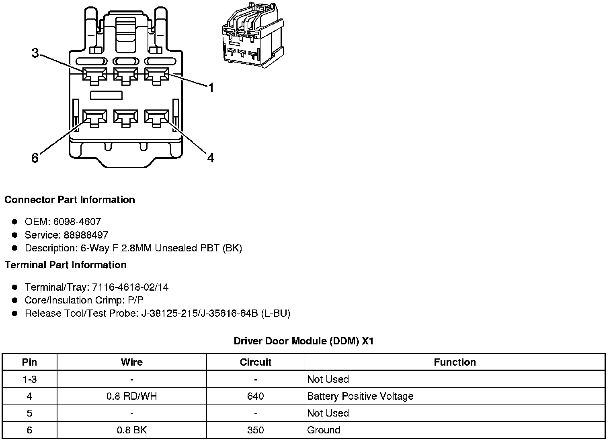
Driver Door Module (DDM) X2
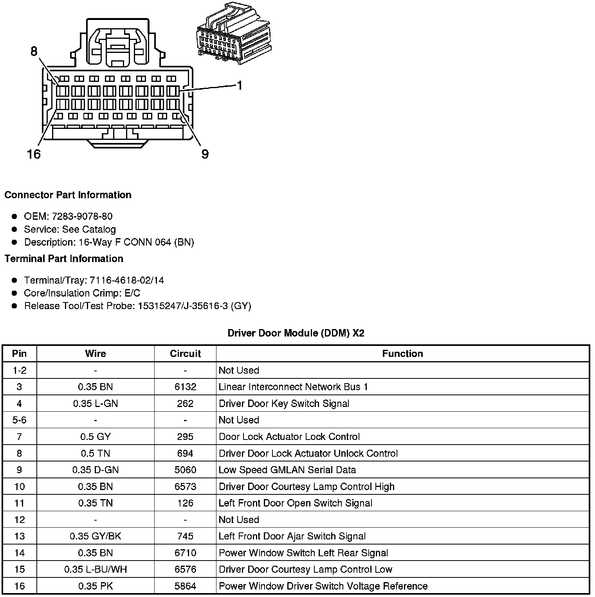
Driver Door Module (DDM) X3
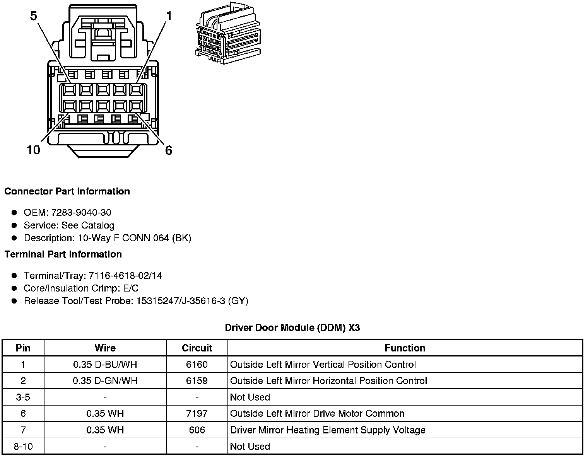
Driver Door Module (DDM) X4
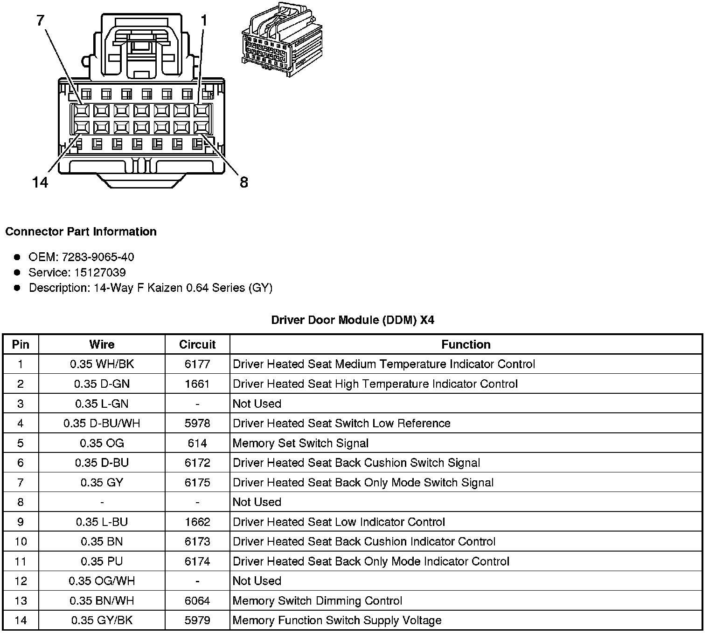
Driver Door Module (DDM) X6 (RHD)
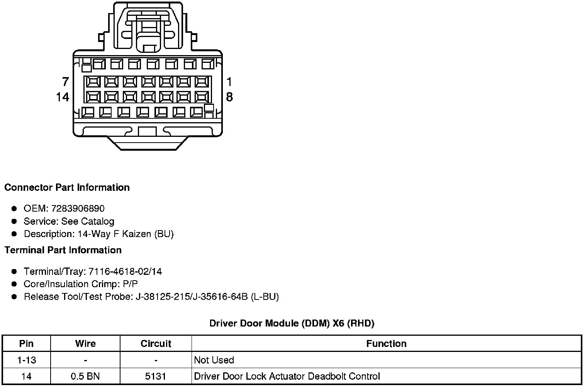
Driver Door Module (DDM) X7 (DR4)
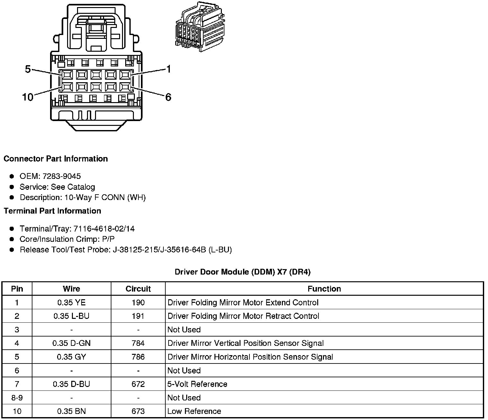